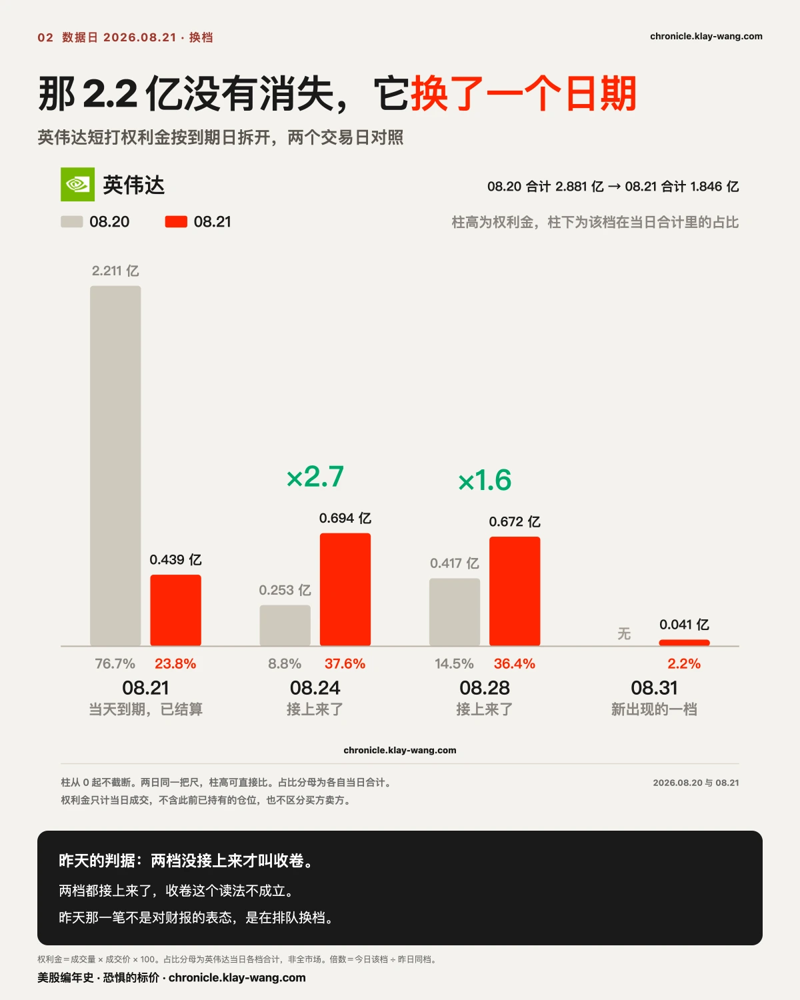
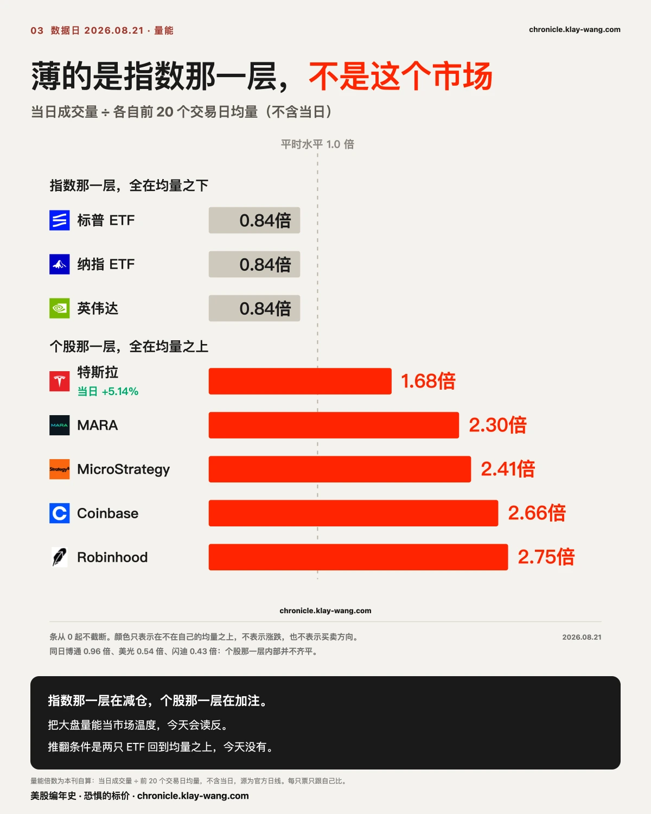
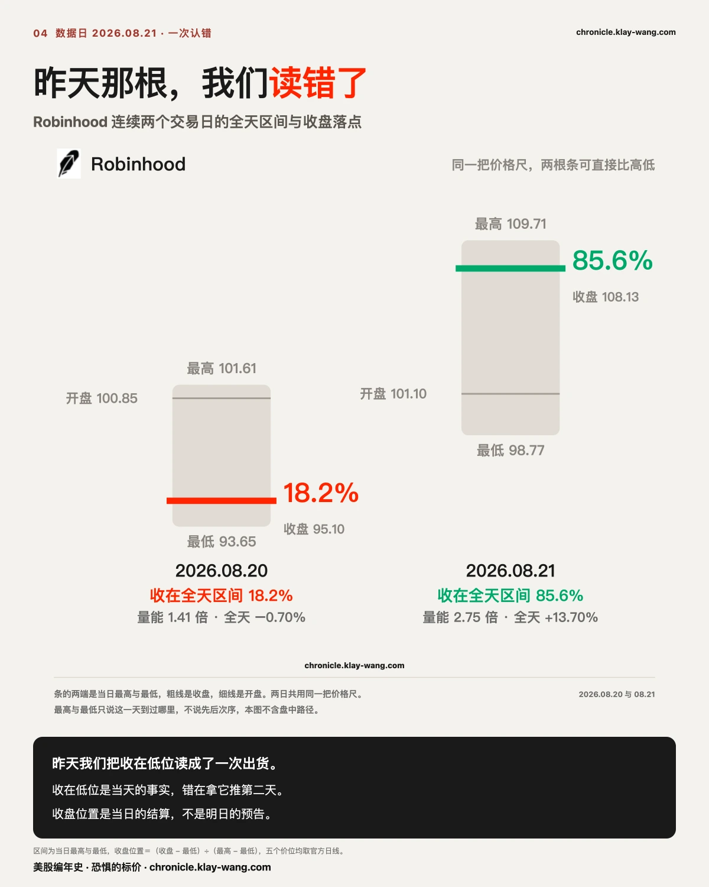
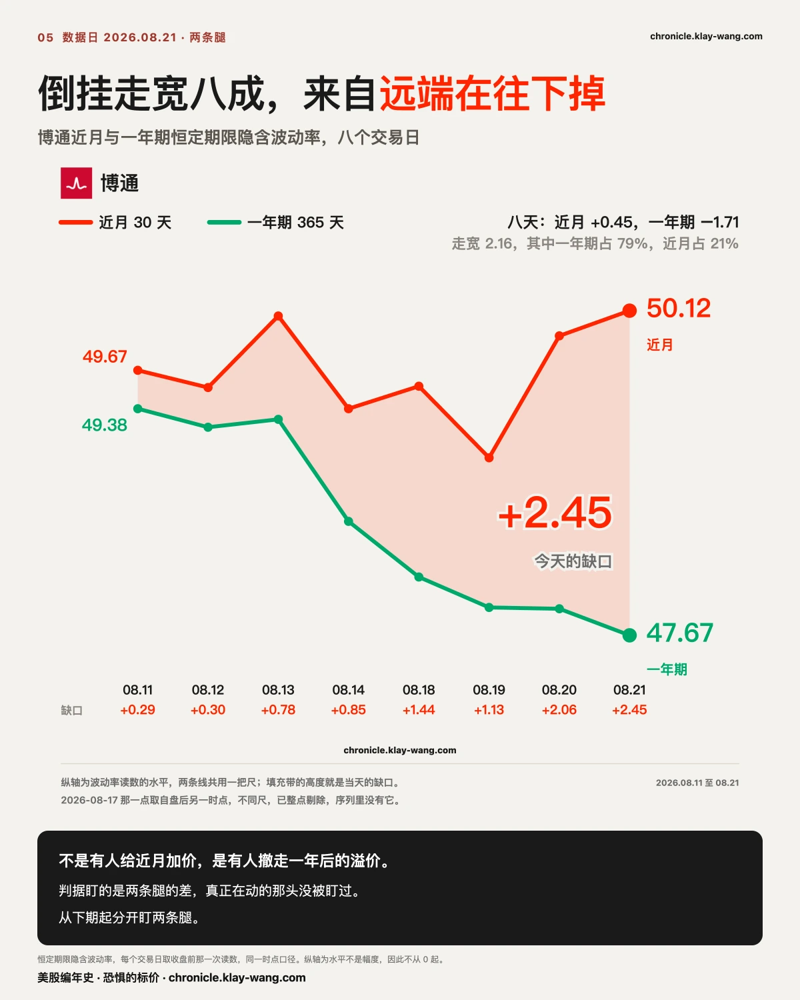
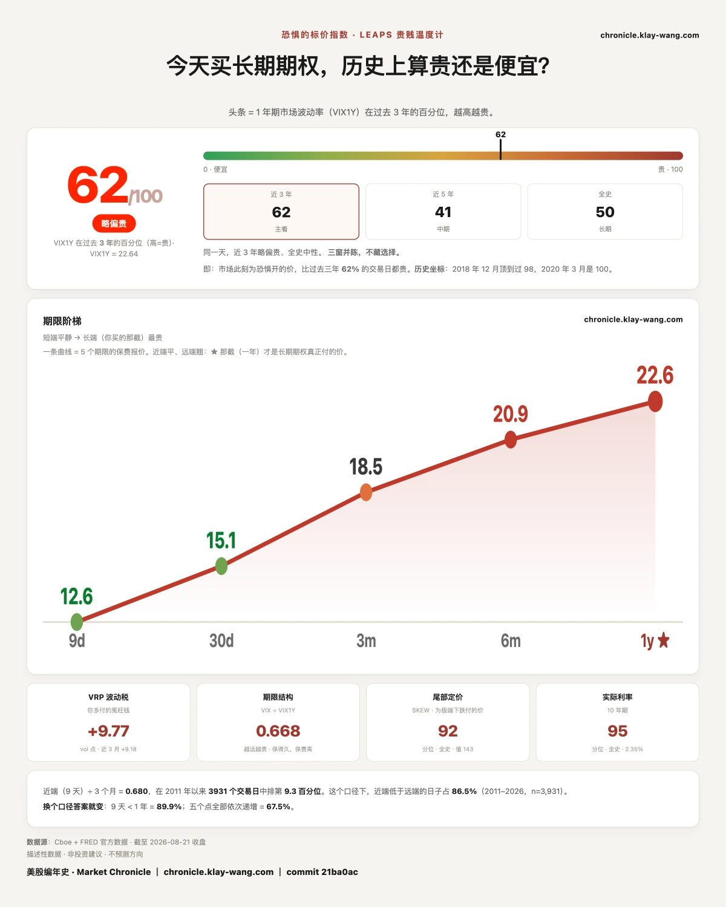

为什么昨天没人肯卖，今天没人肯买？ · 8.17-8.21
这一期讲什么
先看今天的涨跌榜：Robinhood +13.70%，特斯拉 +5.14%，加密三只全绿，指数微涨。
再看同一天的钱。短打层 5.748 亿美元权利金，其中 79.3% 压在一个还没到的日子上，8 月 28 日。
涨跌榜上没有 8 月 28 日这一行。它不会有。涨跌榜只记录已经发生的事，而权利金记录的是有人愿意为还没发生的事付多少钱。
这两张表今天指向两个不同的市场。看第一张的人以为今天是普涨日，看第二张的人知道这一周所有人都在等下周五。

特斯拉这 1.643 亿，买的是一个星期，不是一年
今天特斯拉收 362.86，涨 5.14%，成交量是平时的 1.68 倍。它同时是全场第二重的权利金，1.643 亿美元。按涨跌榜的读法，这是今天的赢家。
把这 1.643 亿拆开看，它买了什么。
先看当天到期那一层。 365 看涨today成交 427,200 张，而它的持仓量只有 10,049 张，也就是当天的成交量是既有持仓的 42 倍。360 看涨成交 327,753 张对 25,158 张持仓，362.5 看涨 191,653 张对 4,985 张持仓。这一层没有留下任何东西，365 那一档收盘时还在现价上方，当天到期就归零了。这不是布局，是一天之内的来回。
再看下周五那一层。 1.643 亿里有 1.627 亿压在 8 月 28 日，而且几乎全是看涨。行权价从 340 一路铺到 380，二十多档连成一条阶梯：
- 350 看涨 2304 万，是单档最重的一笔，这一档已经在现价下方 3.5%，买它的人付的是实值
- 365 看涨 1998 万，成交量是持仓量的 6.7 倍
- 370 看涨 1387 万，3.4 倍
- 380 看涨 840 万，5.1 倍，这是整条阶梯的上沿
- 362.5 与 367.5 两档更极端，成交量分别是持仓的 37.6 倍和 47.9 倍。今天早上这两个价位上几乎什么都没有，一天之内被建了出来。
最后看一年后那一层。 特斯拉一年期平值合约的隐含波动率，昨天 48.28，今天 48.24。
动了 0.04。
三层放在一起，今天这笔钱的形状就清楚了：当天来回一遍，为下周五铺了一条到 380 为止的阶梯，一年之后什么都没买。
380 是这条阶梯的尽头，比今天的收盘高 4.7%。有人愿意为下周五之前涨到那儿付钱，没有人愿意为更远的地方付钱。
这句话可以拿去吵，所以把推翻它的条件也写上：如果下周一在特斯拉不再上涨的情况下，一年期读数抬过 49，说明今天只是反应滞后，这段要收回；如果它继续钉在 48 附近，那么这轮上涨从头到尾没有被长端定价接受过。
一整周，市场只在两天里挪开过眼睛
把 8 月 28 日那一档在每天权利金里的占比排出来：8 月 13 日 0%，14 日 0%，17 日突然到 90.7%，18 日 92.4%，19 日 59.8%，20 日 45.2%，今天回到 79.3%。
中间那两天的回落有明确原因，当周到期日临近，钱先去处理眼前的事。今天眼前的事结清，注意力立刻回到原处。
有人会说，79.3% 有什么稀奇，月度到期日本来就要移仓。这个反驳是对的，所以先去查了基线：过去二十个交易日里最集中的那一档，占比从 38% 到 100% 都出现过，8 月 7 日是 100%。79.3% 放进这个分布毫不出奇。
不出奇的是数字，出奇的是那个日期已经站了五个交易日，只被打断过两天。
8 月 26 日盘后英伟达发财报，28 日是财报之后的第一个交易日。同一周，杰克逊霍尔年会 27 日开幕，沃什作为美联储主席的首次讲话安排在 28 日。一家公司的业绩和一位央行主席的第一次开口，落在同一个周五。
昨天记过一个数：英伟达 2.211 亿短打权利金里 76.7% 压在今天到期这一档。今天结算之后，8 月 24 日那一档从 2530 万涨到 6942 万，两倍七；8 月 28 日从 4170 万涨到 6721 万，一倍六。钱没有消失，它换了一个日期。

薄的是指数那一层，不是这个市场
今天最值得看的不是涨跌，是量。
标普 ETF 的成交量是前二十日均量的 0.84 倍，纳指 ETF 0.84，英伟达 0.84。同一天，特斯拉 1.68 倍，MARA 2.30，MicroStrategy 2.41，Coinbase 2.66，Robinhood 2.75。
三个 0.84 对五个远超 1.0，同一个交易日。
昨天写过这个市场的盘口在变薄，今天要修一句：薄的是指数那一层，不是这个市场。指数在减仓的同一天，个股在加注。
昨天写死过一个推翻条件，如果周五结算之后成交量回到均量之上而日内波幅反而收窄，那说明前两天只是到期前的例行清淡。今天两只指数 ETF 都是 0.84 倍，没有回到均量之上，条件没触发。

Robinhood 两天，把一个流行读法拆了
有一种读法几乎人人在用：高开、放量、收在全天低位，说明主力在出货，明天该跌。
昨天我们自己就是这么写 Robinhood 的，而且写得很有把握。
先把昨天那一天摊开。 它前收 95.77，跳空开在 100.85，等于开盘就送了 5.30%。盘中最高摸到 101.61，然后一路被砸，最低见 93.65，比前收还低 2.2%。收在 95.10，落在当天区间的 18.2% 位置，全天倒跌 0.70%。成交量 1.41 倍。
同一天另外三只跳空超过 5% 的票，MicroStrategy 收在区间 75.0%，Coinbase 72.0%，MARA 96.7%。四只一起高开，只有它一只被按回原地。 开盘买入、收盘卖出的人，那一天亏 5.70%，而日线上它只是一根小阴线。
这个形状看起来太像出货了，所以我们写了出货。
今天同一只票。 前收 95.10，跳空开在 101.10，又送了 6.31%。盘中最高 109.71，最低 98.77，收 108.13，落在区间 85.6%，全天涨 13.70%。成交量 2.75 倍。
跟昨天几乎是同一个开场，走出了完全相反的结局。
错在哪一步，值得说清楚，因为这一步很多人天天在走。 收在区间低位是当天的事实，它确实说明那天的买盘接不住高开的价格，这一层没有错。错的是下一步：把当天的成交结构当成第二天的方向。
一天的量价告诉你的是那一天谁占了上风。它不告诉你第二天谁会来。收盘位置是当日的结算，不是明日的预告。

存储：四个市场，四个答案
这一周存储那几只票的叙事面异常热闹。三星宣布规模最高 110 万亿韩元的股东回报，据报道是韩国企业史上最高。美光公布跨十年约 100 亿美元的研究实验室计划。闪迪发布新的存储产品线。
而美银引用 EPFR 的数据，半导体 ETF 已经连续三周净流出，累计 63 亿美元。
现货盘口这一侧，美光和闪迪今天的成交量只有前二十日均量的 0.54 倍和 0.43 倍。
期权那一侧，闪迪是今天单一合约权利金最重的那一档，8 月 28 日到期的 1600 看涨，1409 万美元，成交量是持仓量的 2.4 倍。
叙事在买方，资金流在卖方，现货在观望，期权在下注。同一批公司，四个市场四个答案。这种时候不必急着挑一个信，先记住它们不一致，比记住任何一个答案都有用。
顺带把前天那句判断的两面都验完了。8 月 20 日美光用 0.62 倍的量涨 3.97%、闪迪 0.65 倍涨 2.02%，当时说盘口薄；今天美光 0.54 倍跌 0.77%、闪迪 0.43 倍跌 0.28%，量更少，方向换了。盘口薄的时候，方向是谁来谁定。
博通：有人在撤掉一年之后的风险溢价
近月隐含波动率减一年期，同一把尺子量出来的序列是 0.29、0.30、0.78、0.85、1.44、1.13、2.06，今天 2.45。今天博通还涨了 1.21%。
多数人看到这个会说，近月保险在变贵，有人在为最近一个月的某件事付钱。
拆成两头看，这个读法站不住。八个交易日里，近月从 49.67 走到 50.12，只涨了 0.45。一年期从 49.38 滑到 47.67，跌了 1.71。倒挂总共走宽 2.16，其中八成来自一年期那头往下掉，近月只贡献了两成。
所以不是有人在给近月加价，是有人在撤掉一年之后的风险溢价。近月几乎没动，动的是远端。
同一天 SpaceX 的同一个读数是负 4.35，本周最深，而且机制完全相反：它的近月四天从 62.99 塌到 57.66，一年期只从 63.83 到 62.01。博通是近月在加价，SpaceX 是近月在卸货。马斯克周四说星舰二级回收要推迟几个月，这是坏消息，股价这一周跌了 4.29%。但对近月期权来说，一个悬着的二元事件被推到几个月之后，等于近期不会再发生什么了。坏消息压住了股价，同时消掉了近期的不确定性，这两件事不矛盾。

恐惧的标价：不怕下周，却在为万一付历史高价
今天读数 62，本周最低。周内序列 65.3、69.7、68.4、63.4、67.9、62。最低点落在月度到期日当天不奇怪，结算清掉大量近月保险，回落有机械的成分。
值得看的是价格的形状。今天的波动率期限阶梯：九天 12.58，三十天 15.13，三个月 18.50，六个月 20.90，一年 22.64。三十天那一档 15.13 是一年期 22.64 的三分之二，九天那一档 12.58 连六成都不到。
同一天，Cboe SKEW 指数 143.23，处在全史 92.4 分位。这个指数量的是市场为极端下跌付的价。
三十天的保险只有一年期的三分之二，九天的连六成都不到，而为尾部定的价在历史高位。市场不怕下周，但一直在为万一付钱。不怕和不设防是两件事，今天的市场做到了前一件。
围栏那一侧给出同样的答案。本周五场，标普 ETF 向下那半平均用掉 61.7%、向上那半 14.7%，纳指 ETF 向下 74.4%、向上 1.8%。下沿被冲破过两次，上沿一次都没有。唯一的例外是今天。

这对你手里的票意味着什么
不给操作建议，只把今天的价格换算成你能自己判断的东西。
手里有下周要出财报的票，尤其是英伟达：今天有 4.555 亿压在财报之后的第一个交易日，不是财报当天。市场买的不是那份财报，是财报之后那一段。如果你打算在财报前后做点什么，先想清楚你跟的是这 4.555 亿，还是跟的是财报本身，这是两件事。
手里有存储票：叙事、资金流、现货、期权今天给了四个不同答案。四个都对不上的时候，仓位比观点重要。
手里有今天涨得很猛的票：特斯拉那 0.04 是提醒。一天的涨幅和市场对这只票一年后的定价，可以完全没有关系。
什么都没拿，在等一个进场点：三十天的保险是一年期的三分之二，九天的连六成都不到，这是眼下最便宜的那一段。便宜不等于该买，但它至少说明市场认为下周不会有事，而这个共识本身就是可以被证伪的东西。
今天值得带走的三句话
特斯拉今天涨 5.14%，吸走全场第二重的权利金，而它一年后的定价从 48.28 变成 48.24。很多人参与了这次上涨，没有人因此改变对它一年后的看法。
收在全天低位说明主力出货、明天该跌，这个读法昨天我们自己也信，今天被 Robinhood 的 13.70% 打回来了。一天的量价只说明那一天谁占上风。
三十天的保险只有一年期的三分之二，九天的连六成都不到，而为极端下跌定的价在历史 92 分位。市场不怕下周，但一直在为万一付钱。
预告与下一期回访
下面每条都写死了判据和唯一来源，下一期照着量。
8 月 28 日那一档的 4.555 亿，在财报出来之后是继续增厚还是当天了结。判据：若 8 月 26 日之后该档权利金较今日下降过半，那么今天的集中只是事件前的排队；若继续增厚，说明买的是财报之后那一段而不是财报本身。只引短打异常表 EOD 那一轮。
Robinhood 这根 13.70% 是不是又一次单日形状。判据：若下一个交易日在 1 倍以下量能收跌，那么今天的放量新高同样不构成方向，我们对它的两次读法都只对当日有效。
博通倒挂两条腿分开盯（原判据已作废，理由见正文）。新判据：一年期那条若在标的不跌的日子里止跌回到 48 以上，说明撤走风险溢价这件事结束；近月那条若单独抬过 51，才轮得到主动布置那个读法。两条各自成立各自记，只取每日同一时点那一枪。
加密三只连续第三天把涨幅放在跳空里。今天 MicroStrategy 跳空 6.49 白天负 0.36，MARA 跳空 4.93 白天负 3.76，但 Coinbase 跳空 4.47 白天正 3.57。判据：若下一个交易日 Coinbase 的白天段继续为正，那么涨幅全在夜里这个说法只对另外两只成立，不再打包写。
特斯拉一年期读数在大涨之后是否补涨。判据：若下一个交易日在标的不再上涨的情况下一年期读数抬过 49，说明今天的按兵不动只是反应滞后；若继续钉在 48 附近，说明这轮上涨从头到尾没有被长端定价接受。只引每日同一时点那一枪。
恐惧的标价 62 之后。判据：若下周一在标的不跌的情况下读数回到 68 以上，说明今天的回落只是到期日的机械效应。
本站不提供投资建议，不预测方向，不做择时。